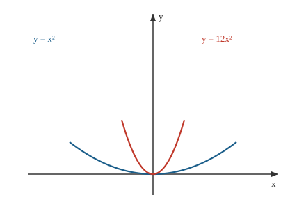

Based on Cambridge International AS & A Level Mathematics: Pure Mathematics 1 Coursebook (Sue Pemberton), Chapter 2, printed pp.59–66 (sequences of translations, reflections and stretches). Printed pages were read from P1.pdf (printed 59–66 = PDF 71–78). Own wording and new numbers.
Key words: combined transformations, stretch
Combined transformations are two or more transformations of a graph applied in a stated order. To find the resulting equation, carry out the corresponding replacements or multiplications in that same order. A stretch, a reflection and a translation each have their own replacement: replace \(x\) by \(ax\) for a stretch of factor \(1/a\) parallel to the \(x\)-axis; replace \(x\) by \(-x\) for a reflection in the \(y\)-axis; multiply the whole function by \(k\) for a stretch of factor \(k\) parallel to the \(y\)-axis; and add a constant for a vertical translation.

Book: a two-step combination on printed pp.59–61. New numbers.
The point \((0, 1)\) lies on the graph of \(y=f(x)\). A stretch of scale factor 3 parallel to the \(y\)-axis is applied, then a translation of 2 units in the positive \(y\)-direction. Find the \(y\)-coordinate of the image of this point.
Answer: \(5\)
Book: Exercise 2H style, printed pp.63–66, three transformations in a stated order. New numbers in the same pattern as the official paper later in this section.
The graph of \(y=x^2\) is stretched by scale factor \(1/2\) parallel to the \(x\)-axis and then by scale factor 3 parallel to the \(y\)-axis. Find the equation of the resulting graph.
Answer: \(y=12x^2\)
The point \((0, 1)\) lies on the graph of \(y=f(x)\). A stretch of scale factor 3 parallel to the \(y\)-axis is applied, then a translation of 2 units in the positive \(y\)-direction. What is the \(y\)-coordinate of the image of this point?
Answer: \(5\)
The graph of \(y=x^2\) is stretched by scale factor \(\dfrac{1}{2}\) parallel to the \(x\)-axis and then by scale factor 3 parallel to the \(y\)-axis. The resulting graph has equation \(y=cx^2\). What is the value of \(c\)?
Answer: \(12\)
The graph of \(y=f(x)\) is translated by 1 unit in the positive \(x\)-direction and then stretched by scale factor 2 parallel to the \(y\)-axis, giving \(y=2f(x-1)\). What is the scale factor of the stretch parallel to the \(y\)-axis?
Answer: \(2\)